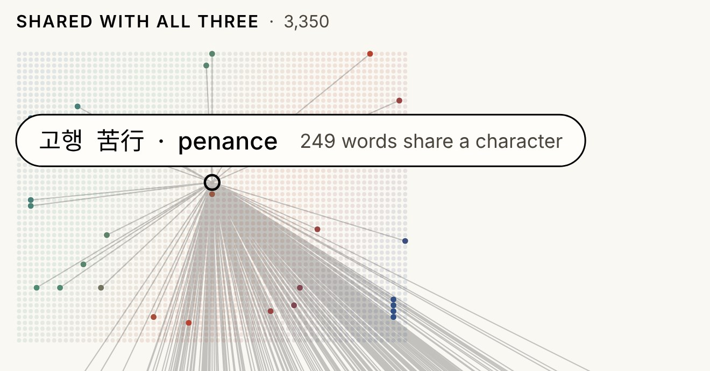

Korean, Chinese, Japanese, and Vietnamese were all once written with Chinese characters. Hanja Roots gathers 21,838 Korean words whose characters are also a word in at least one of the other three, and shows what each one means and how it sounds in every language that shares it.
For centuries, Chinese characters were the shared writing system of East Asia. Korea, Japan, and Vietnam read and wrote Classical Chinese, and borrowed thousands of words along with the characters, each pronouncing them in its own way. The flow ran in more than one direction: in the 19th century, Japanese scholars coined words for new ideas from old characters, and those words spread back to China, Korea, and Vietnam.
Today Korean is written mostly in Hangul and Vietnamese in the Latin alphabet, but the words remain. Write them in characters again and they line up across all four languages.
"Economy": a classical phrase given its modern meaning in Japan, then taken up by all three neighbours.
Same characters, not always the same meaning. 가족 家族 is "family" in Korean, Chinese, and Japanese, but "extended family, clan" in Vietnamese. A word's page shows each meaning side by side.
35,411 Korean words written with Hanja, checked against Chinese, Japanese, and Vietnamese dictionaries
all threetwo languagesone language
Common words are the most likely to be shared: 90.8% of everyday words are, against 40.5% of rare ones. A word left out wasn't necessarily invented in Korea; dictionary coverage varies.
Vietnamese matches are by sound. Words are matched by their Sino-Vietnamese reading (經濟 → kinh tế), so about 2 in 40 are different words that sound alike. A word's page checks Wiktionary to confirm.

Hover a word and its relativesClick select Pinch or ⌘ scroll zoomTwo fingers or drag moveDouble-click reset
Languages show the words shared by exactly those Search in any language or romanizationSelect compare in the side panel Trace its roots or double-click open its page Listen native recordings from Lingua Libre when there are some
| For | Source | License |
|---|---|---|
| Korean | Basic Korean Dictionary (National Institute of Korean Language), via korean-dict-nikl-krdict; kengdic, whose Hanja are less reliable | CC BY-SA 2.0 KR · MPL 2.0 or LGPL |
| Chinese | CC-CEDICT; Cantonese from to-jyutping | CC BY-SA 4.0 · BSD-2-Clause |
| Japanese | JMdict (Electronic Dictionary Research and Development Group) | CC BY-SA 4.0 |
| Vietnamese | Wiktionary via Kaikki.org and which-dialect; readings from hanviet-pinyin-words | CC BY-SA 4.0 · MIT |
| Characters | Unicode Unihan: meanings, Tang-era readings (from Hugh M. Stimson's T'ang Poetic Vocabulary, 1976), and variant forms to match 學 and 学, or 敎 and 教 | Unicode |
| Recordings | Lingua Libre on Wikimedia Commons, credited to each speaker | Each its own, usually CC BY-SA 4.0 |
Meanings are shortened. Matching uses whole words written with the same characters.